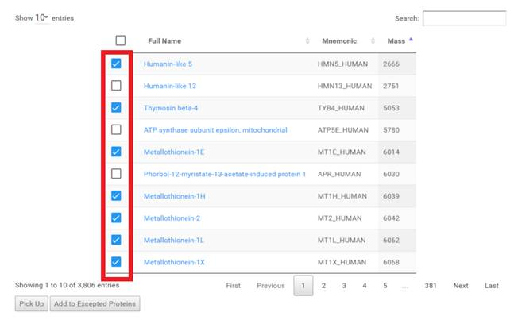
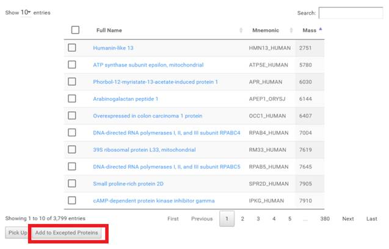
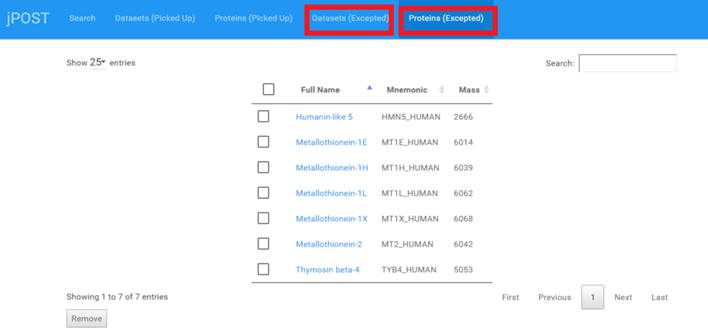

指定した Dataset, Protein を除外項目に追加する。
-
トップページのテーブルで除外したい項目にチェックを入れます。

-
[Add to Excepted Proteins] もしくは [Add to Excepted Datasets] ボタンをクリックすると、
チェックをつけていた項目はトップ画面のテーブルに表示されなくなります。

-
トップメニューの [Datasets (Excepted)], [Proteins (Excepted)] をクリックすると、
除外項目を確認する事ができます。
